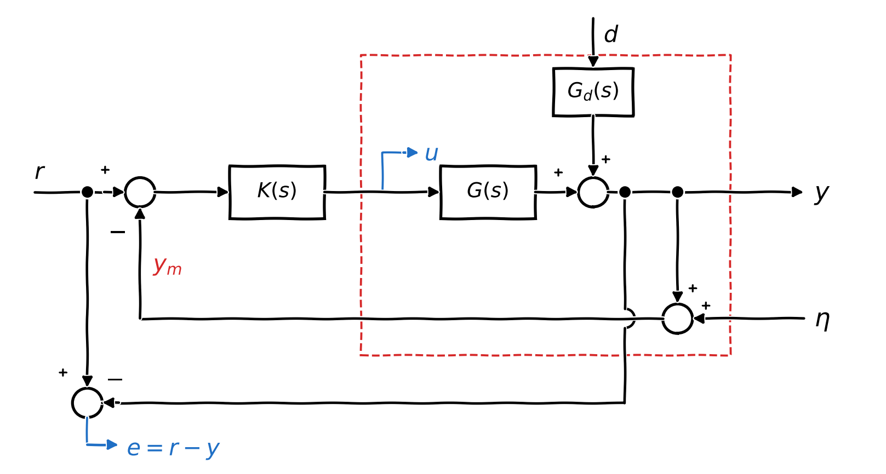
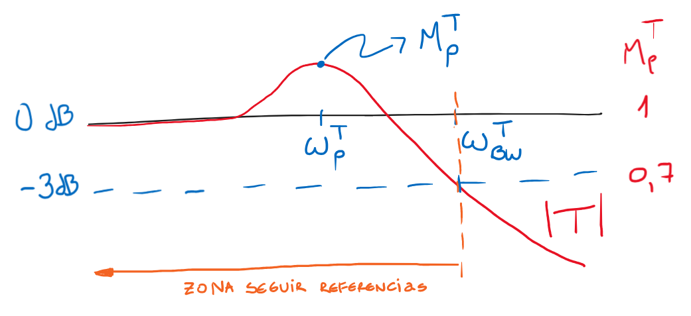
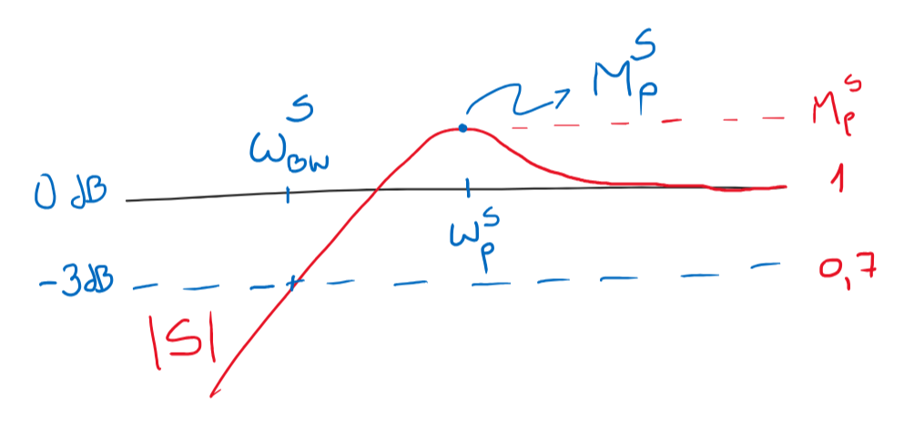
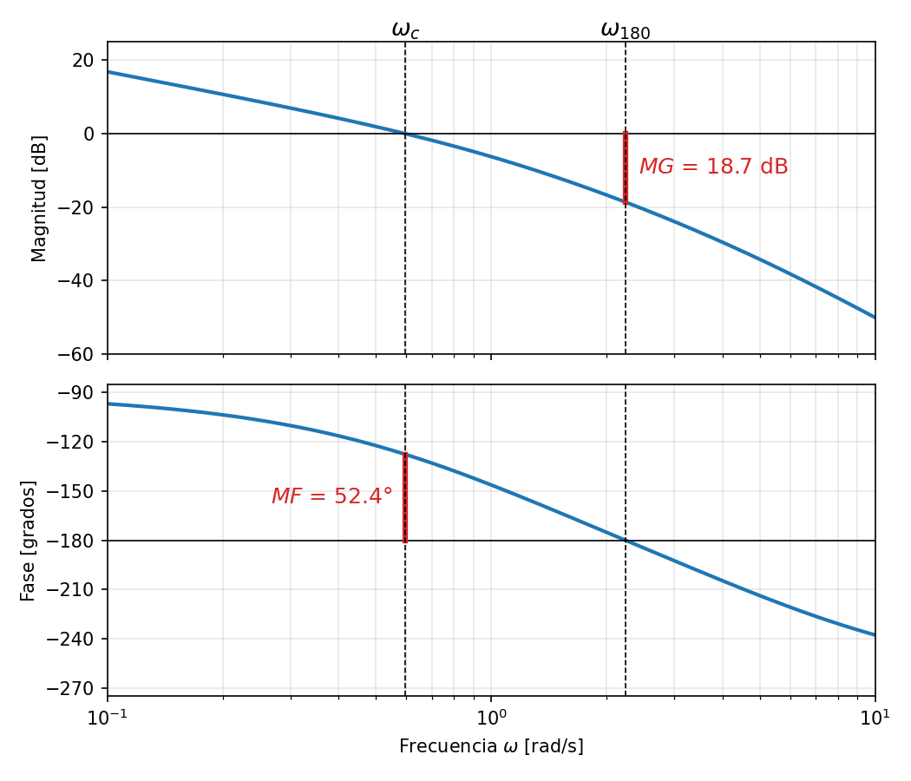
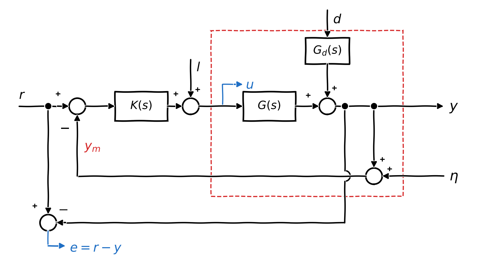
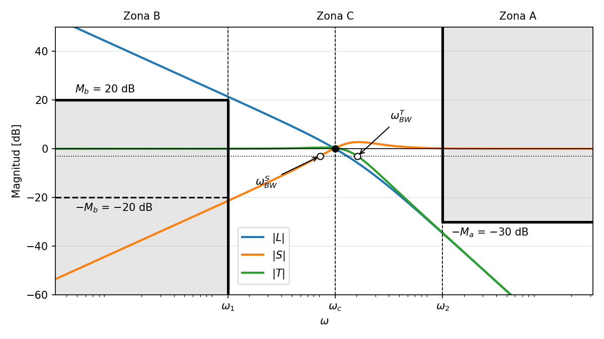

Especificaciones de sistemas de control en el dominio de la frecuencia y otras yerbas#
El contenido de este capítulo se basa en los apuntes del Departamento de Ingeniería de Sistemas y Automática de la Universidad de Valladolid [DepartamentodIngenieriadSyAutomatica] y en el capítulo 2 de [SP05].
Sensibilidad y sensibilidad complementaria#
Sea el sistema de control de la Figura 96. Donde \(r\), \(d\) y \(\eta\) son las entradas de referencia, perturbaciones y de ruido, respectivamente. Por otro lado, las variables de interés, son fundamentalmente \(y\), la variable física que queremos controlar, pero también la señal \(u\) que es la acción de control y el error, definido como \(e=r-y\), es el error de seguimiento de la variable física que deseamos controlar. Observar, que la señal que ingresa al controlador es \(r-y_m\), que incluye el ruido de medición \(\eta\).


Figura 96 Sistema realimentado genérico, con el error medido como \(e=r-y\)#
Su función de transferencia de lazo es \(L=GK\) y las relaciones de lazo cerrado son:
Las dos funciones de transferencia más importantes son:
La sensibilidad \(S(s)\): Es la función de transferencia entre la entrada de referencia \(r\) y el error \(e\) (en ausencia de perturbaciones). También es la función de transferencia entre la perturbación \(d\) y la salida \(y\) con \(G_d=1\) cuando la referencia \(r\) es cero.
La sensibilidad complementaria \(T(s)\): Es la función de transferencia entre la referencia \(r\) y la salida \(y\) (en ausencia de perturbaciones).
se cumple que: \(S+T=1, \Rightarrow T=1-S\)
Las referencias, perturbaciones y ruidos que afectan a un sistema de control tienen una frecuencia característica, que no suele ser fácil de representar o modelar.
La capacidad de rechazar perturbaciones o de seguir referencias puede especificarse mejor en el dominio frecuencial que en el plano-\(s\).
Control «perfecto»#
Uno de los intereses fundamentales del control es mantener el error de seguimiento \(e=r-y\) en valores acotados:
En particular, control perfecto significa que \(e \approx 0\). Para que esto suceda, es necesario que \(S\approx 0\), para que los términos \(Sr\approx 0\) y \(G_dSd\approx 0\), y que \(T \approx 0\), para que \(T\eta \approx 0\). Como \(S+T=1\), ambas condiciones no pueden cumplirse a la misma frecuencia, sólo en bandas de frecuencia distintas. Por lo tanto, si las referencias \(r\) y perturbaciones \(d\) se encuentran en la zona de frecuencias donde \(S \approx 0\) y el ruido \(\eta\) en la zona de frecuencias donde \(T\approx 0\), es posible lograr control perfecto.
Características de lazo cerrado#
Las sensibilidades \(S\) y \(T\) especifican la capacidad de seguimiento de referencias o de atenuación de perturbaciones y ruidos de un sistema de control.
Características sobre \(T\):
Ancho de Banda (\(\omega_{BW}^T\)): Establece la banda de frecuencias desde \((0,\omega_{BW}^T)\) en la que las referencias \(r\) pueden ser seguidas.
Pico de resonancia (\(M_p^T\)): Es la máxima amplificación de ganancia.
Frecuencia de pico (\(\omega_p^T\)): Es la frecuencia a la que ocurre el pico resonante.


Figura 97 Módulo de la función de sensibilidad complementaria \(T(j\omega)\)#
Características sobre \(S\):
Ancho de Banda (\(\omega_{BW}^S\)): Frecuencia a la que \(|S|\) cruza por primera vez \(-3dB\) desde abajo. Las perturbaciones \(d\) se atenúan en el rango de \((0, \omega_{BW}^S)\) y no se atenúan en \((\omega_{BW}^S, \infty)\).
Pico de resonancia (\(M_p^S\)): Es la máxima amplificación de ganancia.
Frecuencia de pico (\(\omega_p^S\)): Es la frecuencia a la que ocurre el pico resonante.


Figura 98 Módulo de la función de sensibilidad \(S(j\omega)\)#
Características de lazo abierto#
Como hemos visto en análisis, las principales características que se obtienen de la función de transferencia a lazo abierto \(L\) son:
Margen de ganancia \(MG\): factor en que puede aumentarse la ganancia del lazo antes de perder la estabilidad, \(MG = 1/|L(j\omega_{180})|\), donde \(\omega_{180}\) es la frecuencia a la que la fase de \(L\) vale \(-180°\). En decibeles, \(MG_{dB} = -|L(j\omega_{180})|_{dB}\).
Margen de fase \(MF\): la fase sobre los \(-180°\) a la frecuencia \(\omega_c\), \(MF = 180° + \angle L(j\omega_c)\).
Frecuencia de corte \(\omega_c\): es la frecuencia en la cual \(|L(j\omega)|= 1\) o \(0dB\).
La pendiente de \(|L|\) en el entorno de la frecuencia de corte \(\omega_c\) no debe ser muy elevada para que los márgenes de estabilidad sean razonables.


Figura 99 Márgenes de fase y ganancia del sistema#
Objetivos de un sistema de control#
Sea el sistema de control de la Figura 100, donde además se agrega una perturbación \(l\) a la entrada de la planta.


Figura 100 Sistema de control genérico con perturbación a la entrada de la planta#
Las relaciones entre todas las variables importantes del sistema son:
siendo \(T=\frac{L}{1+L}\), la sensibilidad complementaria. Se supone además que \(L\) es estrictamente propia (orden del numerador < que el deniminador), es decir \(\lim_{\omega\rightarrow \infty}|L(j\omega)|=0\), por lo que \(\lim_{\omega\rightarrow \infty}|S(j\omega)|=1\) y \(\lim_{\omega\rightarrow \infty}|T(j\omega)|=0\).
Las relaciones anteriores quedan completamente determinadas por las seis funciones de transferencia de sensibilidad: \(S\), \(T\), \(G_dS\), \(SG\), \(SK\) y \(G_dSK\), que deben diseñarse para atenuar el efecto de las señales exógenas \(r\), \(l\), \(d\) y \(\eta\) sobre el lazo de control.
Los objetivos de control son:
Las sensibilidades \(S\), \(T\), \(G_dS\), \(SG\), \(SK\) y \(G_dSK\) deben ser estables (estabilidad interna).
Para conseguir seguimiento asintótico perfecto (es decir \(y=r\) en estado estacionario), en ausencia de perturbaciones, ante escalones en la referencia \(r\), debe cumplirse \(T(0)=1\), es decir \(|L(j\omega)|\rightarrow\infty\) cuando \(\omega\rightarrow 0\): \(L\) debe contener un integrador. En general, \(|T(j\omega)|\approx 1\) en bajas frecuencias requiere que \(|L(j\omega)|\) sea grande.
Además, el efecto de las perturbaciones \(l\), \(d\) y \(\eta\) sobre el lazo de control debe ser pequeño. Para ello:
\(|S|\) debe ser pequeño en la banda de frecuencias de las perturbaciones \(d\), para no deteriorar la señal de salida \(y\). Es decir \(|L|\) debe ser grande para dicha zona de frecuencias.
Para no deteriorar el error de seguimiento \(r-y\), \(|S|\) debe ser pequeño en la banda de frecuencias de \(r\) y \(d\), \(|T|\) debe ser pequeño para las frecuencias características del ruido \(\eta\) y \(|SG|\) debe ser pequeño en la banda de frecuencias de la perturbación \(l\).
Finalmente, para que el esfuerzo de control \(u\) sea moderado, \(|SK|\) debe ser moderado. Esto es especialmente importante por encima de \(\omega_c\), donde \(|L|<1\) y por lo tanto \(SK\approx K\): un controlador con mucha ganancia en alta frecuencia amplifica el ruido \(\eta\) sobre \(u\). En caso contrario podrían saturarse los actuadores que generan \(u\).
Especificaciones sobre las sensibilidades#
Los objetivos de control parecen ser contradictorios, ya que al ser \(S+T=1\), si la sensibilidad \(S\) debe ser pequeña, \(|S|\ll 1\), es decir \(|L|\gg 1\), entonces \(|T|=\left|\frac{L}{1+L}\right|\approx 1\) no puede ser también pequeña. Esto genera una relación de compromiso para \(|L|\).
La solución de la paradoja está en que las frecuencias características de cada señal exógena son diferentes (en el mejor de los casos).
Las señales de referencia \(r\) y las perturbaciones \(l\) y \(d\) son típicamente de baja frecuencia, menores que \(\omega_1\), es decir \(\omega \leq \omega_1\).
Las señales de ruido en los sensores \(\eta\) son de alta frecuencia,mayores que \(\omega_2\), es decir \(\omega \geq \omega_2\).
Por tanto: \(|S|\ll 1\) en una banda de frecuencias \((0, \omega_1]\) y \(|T|\ll 1\) en una banda de frecuencias \([\omega_2,\infty)\), con \(\omega_1<\omega_2\).
La atenuación se especifica en decibeles mediante las cantidades positivas \(M_a\) y \(M_b\):
Las frecuencias \(\omega_1\) y \(\omega_2\), y los factores de atenuación \(M_a\) y \(M_b\) dependen de cada problema específico.
Especificaciones sobre la función de transferencia a lazo abierto \(L(s)\)#
Las especificaciones sobre \(|S|\) y \(|T|\) pueden ponerse en función de \(|L|\) teniendo en cuenta que:


Figura 101 Forma deseada de \(|L|\) (loop-shaping) y zonas de especificación. Ejemplo con \(L(s)=\frac{3}{s(s+2)}\). Adaptada de [SP05, DepartamentodIngenieriadSyAutomatica].#
En baja frecuencia (Zona B): Atenuación de perturbaciones de proceso.
En alta frecuencia (Zona A): Atenuación de ruido en los sensores.
En media frecuencia (Zona C): Se busca buena estabilidad relativa.
En términos de los márgenes de estabilidad es necesario margen de fase \(MF>50°\), margen de ganancia \(MG>12dB\) y margen de sensibilidad o radio de estabilidad \(RS\geq 0.5\), por lo que \(\max_\omega|S(j\omega)|\leq 1/RS=2\). La pregunta que todos nos hacemos es, ¿De donde salen estos valores?… y yo que sé!!!… Te la hago corta, estos márgenes seudo-empírico permiten tener una respuesta temporal aceptable.
Relacionado con lo anterior, la pendiente de \(|L(j\omega)|\) en las proximidades de la frecuencia de corte debe rondar los \(-20dB/dec\), sin ser más pronunciada, para conseguir estabilidad relativa.
Diseño de controladores en el dominio frecuencial#
Especificaciones de diseño:
Estabilidad: Se especifican los márgenes mínimos de fase, ganancia y sensibilidad. (De no tener requerimientos claros, se puede usar la recomendación anterior como punto de partida deseable).
Ancho de Banda: Se especifican los anchos de banda deseados para la sensibilidades \(S\) y \(T\). (Como punto de partida definir \(\omega_{BW}^T \approx \omega_c\)).
Atenuación de perturbaciones: Se especifican los factores de atenuación \(M_a\) y \(M_b\) y las frecuencias \(\omega_1\) y \(\omega_2\) que van a caracterizar las zonas de frecuencia. (Esto no es trivial, hay que conocer muy bien el ruido que se desea atenuar y las perturbaciones que hay que rechazar).
Esfuerzo de control limitado: Se especifica una cota \(M_c\) tal que \(|SK(j\omega)|<M_c\), en especial para \(\omega > \omega_c\), donde \(SK\approx K\). (Para esto hay que conocer el actuador que se pretende usar, esto tampoco es trivial).
Procedimiento para obtener el controlador \(K(s)\) (Loopshaping):
Se elige la frecuencia de cruce de ganancia (frecuencia de corte) \(\omega_c\), con \(\omega_{BW}^S<\omega_c<\omega_{BW}^T\).
Se elige una función de transferencia de lazo abierto \(L\) estrictamente propia que contenga todos los polos y ceros de la planta \(G\) que no tienen parte real negativa (y sus retardos), y tal que \(|L|\) satisface:
\(|L(j\omega)|_{dB}>M_b\) para \(\omega\leq\omega_1\) (zona B), incluyendo un integrador si se requiere error nulo ante escalones;
\(|L(j\omega)|_{dB}<-M_a\) para \(\omega\geq\omega_2\) (zona A);
\(|L(j\omega_c)|=1\) con pendiente cercana a \(-20dB/dec\) en torno a \(\omega_c\) (zona C), de modo de obtener los márgenes de estabilidad pedidos.
Se obtiene el controlador como \(K(s) = L(s)\,G(s)^{-1}\), esto es lo que se llama Loopshaping, invirtiendo la función de transferencia de la planta. Observar que, como \(L\) contiene los polos y ceros en el semiplano derecho (RHP) de \(G\), \(K\) hay que garantizar la estabilidad interna del sistema, si se plantea cancelar esta singularidades en RHP. Si \(K\) resulta impropio, se agregan polos de alta frecuencia (por encima de \(\omega_2\)).
Se verifican las especificaciones sobre \(S\), \(T\) y \(SK\) (márgenes, picos de resonancia, anchos de banda y esfuerzo de control) en frecuencia y mediante simulación temporal. Si no se cumplen, se corrige la forma de \(L\) y se repite el procedimiento.